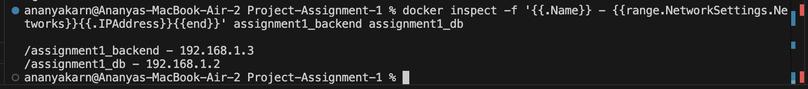
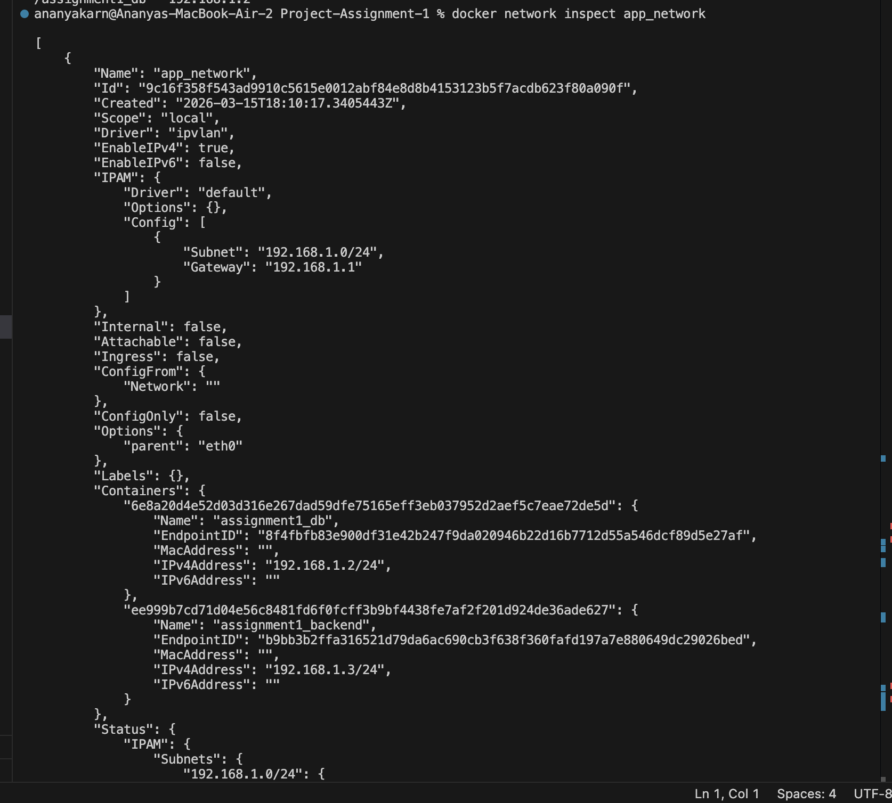
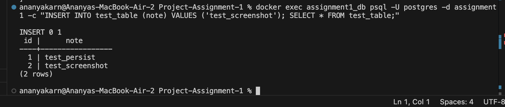
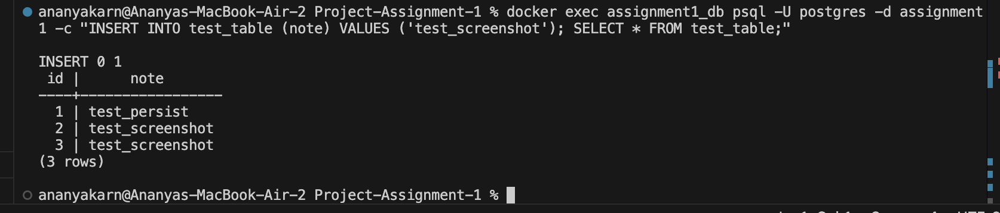

Course: Containerisation & DevOps
Submitted By: Ananya Karn (500125205)
Batch: B3 - CCVT
1. Build Optimization Explanation
The Node.js backend Docker image was built using a multi-stage build process. The primary objective of multi-stage builds is to separate the build execution environment from the final runtime environment, thereby significantly reducing the final image size and improving security.
Stage 1 (Builder):
- Uses
node:20-alpineas the base image. - Copies the
package.jsonfiles and downloads all necessary dependencies usingnpm install.
Stage 2 (Production):
- Starts fresh from
node:20-alpine. - Copies only the necessary code (
index.js) and thenode_modulesdirectory from the builder stage. - Sets up a non-root user (
appuser) to ensure the container runs with least-privilege principles, improving application security. - Avoids including any temporary cache files that npm drops onto the build layer.
This optimization ensures that the final production image contains only what is strictly necessary to run the application.
2. Image Size Comparison
Using Alpine base images combined with multi-stage builds results in extremely lightweight containers compared to standard Node.js or Ubuntu-based Dockerfiles.
Here is the resulting image footprint for our custom builds:
$ docker images | grep project-assignment-1
REPOSITORY TAG IMAGE ID CREATED SIZE
project-assignment-1-backend latest a787549a9c14 1 minute ago 145MB
project-assignment-1-db latest 8da6d20ebd32 1 minute ago 242MBNote: A standard Node.js application built without Alpine/multi-stage configurations often exceeds 1GB in
size. Our optimized backend sits at merely 145MB effectively minimizing vulnerability surface area
and deployment time.
3. Network Design Diagram
The containers communicate securely over a custom Ipvlan network (app_network). The backend depends
on the database initialization before actively accepting traffic, and volume persistence guarantees data stability
for the PostgreSQL database.
graph TD
subgraph Host_OS["Host OS"]
eth0["Physical/VM Ethernet Interface eth0"]
end
subgraph Ipvlan_Network["Ipvlan Network: app_network 192.168.1.0/24"]
eth0 --- IPV["Ipvlan Gateway 192.168.1.1"]
IPV --- Backend["Backend API - Node.js + Express - IP: 192.168.1.3"]
IPV --- DB["PostgreSQL DB - postgres:15-alpine - IP: 192.168.1.2"]
Backend ==> DB
end
subgraph Host_Storage["Host Storage"]
Vol["Docker Volume: assignment1_pgdata"]
end
DB -.-> Vol
Client(("External Browser")) -- "HTTP GET :3000" --> Backend
4. Macvlan vs Ipvlan Comparison
| Feature | Macvlan | Ipvlan |
|---|---|---|
| MAC Addresses | Assigns a unique MAC address to every container. | Shares the host interface's MAC address across all containers. |
| Switch Compatibility | Requires promiscuous mode. Often blocked in cloud/enterprise. | Highly compatible. Works in cloud VPCs. |
| Resource Usage | Higher overhead (filtering multiple MACs). | Lighter overhead; routing done at IP layer. |
| Use Case | Strict legacy apps requiring unique MACs. | Modern clouds and restricted port-security environments. |
For this assignment, Ipvlan was chosen explicitly because macOS Docker Desktop operates within a Linux Virtual Machine where parent interface Macvlan routing can be inherently problematic.
5. Implementation Proofs
A. Docker Network Inspect

B. Container IPs

C. Volume Persistence Test
1. Create Table & Insert Data:

2. Restart Container & Verify Data Exists:
